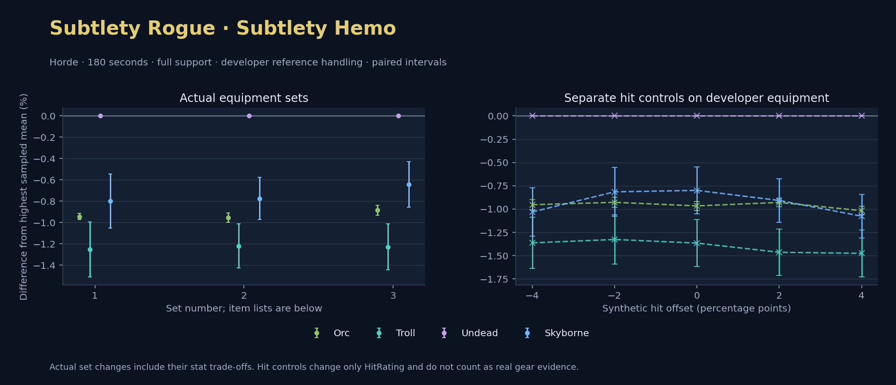

Horde · Orc / Troll / Undead / Skyborne

No pet or guardian appears in the reference combat metrics. Reference: Orc, developer equipment, 180 seconds and full support. Pet choices remain those of the developer build.
WoWSims developer · Slow Main Hand
Unimplemented enchant or active set effects: [{"id": 1676, "pieces": 3, "effects": ["Restores 15 health per 5 sec."]}, {"id": 1676, "pieces": 5, "effects": ["When struck in combat, has a 5% chance to remove a Snare effect from yourself. Can only occur once every 60 sec."]}]
Unmeasured proc rates: [{"source": "set", "id": 1676, "pieces": 4, "kind": "ppm", "origin": "unknown"}, {"source": "enchant", "id": 1900, "name": "Enchant Weapon - Crusader", "kind": "ppm", "origin": "vanilla"}, {"source": "item", "id": 871, "name": "Flurry Axe", "kind": "ppm", "origin": "vanilla"}]
180 seconds, full support and original developer references. Hit below is generic sheet melee / spell hit; school and talent bonuses can be attached directly to spells.
| Race | DPS | Gap and interval | Generic hit | Replay |
|---|---|---|---|---|
| Undead | 673.48 | +0.000% ± 0.000 | 11.4% / 11.4% | Native input · Website JSON |
| Skyborne | 668.09 | -0.799% ± 0.252 | 11.4% / 11.4% | Native input · Website JSON |
| Orc | 667.12 | -0.944% ± 0.028 | 11.4% / 11.4% | Native input · Website JSON |
| Troll | 665.04 | -1.253% ± 0.258 | 11.4% / 11.4% | Native input · Website JSON |
| Slot | Item | ID | Enchant |
|---|---|---|---|
| Head | Darkmantle Cap | 226829 | Lesser Arcane Amalgamation |
| Neck | Beads of Ogre Might | 22150 | |
| Shoulder | Darkspear Pauldrons | 272105 | |
| Back | Earthweave Cloak | 21187 | Enchant Cloak - Agility |
| Chest | Darkmantle Tunic | 226825 | Enchant Chest - Living Stats |
| Wrist | Darkmantle Bracers | 226830 | Enchant Bracer - Agility |
| Hands | Darkmantle Grips | 226828 | Enchant Gloves - Greater Agility |
| Waist | Assassin's Waistguard | 272395 | |
| Legs | Darkmantle Pants | 226827 | Lesser Arcane Amalgamation |
| Feet | Darkmantle Footpads | 226831 | Enchant Boots - Minor Speed |
| Ring 1 | Don Julio's Band | 19325 | |
| Ring 2 | Might of Cenarius | 21189 | |
| Trinket 1 | Adaptive Combat Assistant | 272437 | |
| Trinket 2 | Rune of the Guard Captain | 19120 | |
| Main hand | Persuader | 22384 | Enchant Weapon - Crusader |
| Off hand | Flurry Axe | 871 | Enchant Weapon - Agility |
| Ranged / relic | Fahrad's Reloading Repeater | 22347 |
Published ranked alternatives · Published pre-raid
Recorded source replacements: [{"slot": "head", "from": 11735, "to": 252482, "publishedAlternativeRank": 1, "publishedEpDelta": -2.7, "reason": "First published alternative compatible with the current WoWSims database, class, faction and occupied slots."}, {"slot": "back", "from": 13340, "to": 272414, "publishedAlternativeRank": 1, "publishedEpDelta": -15.6, "reason": "First published alternative compatible with the current WoWSims database, class, faction and occupied slots."}, {"slot": "finger2", "from": 17713, "to": 285190, "publishedAlternativeRank": 2, "publishedEpDelta": -13.4, "reason": "First published alternative compatible with the current WoWSims database, class, faction and occupied slots."}, {"slot": "ranged", "from": 2100, "to": 13023, "publishedAlternativeRank": 1, "publishedEpDelta": -3.5, "reason": "First published alternative compatible with the current WoWSims database, class, faction and occupied slots."}]
Unimplemented enchant or active set effects: [{"id": 143, "pieces": 2, "effects": ["Improves your chance to hit by 2.0%."]}]
Unmeasured proc rates: [{"source": "enchant", "id": 1900, "name": "Enchant Weapon - Crusader", "kind": "ppm", "origin": "vanilla"}, {"source": "enchant", "id": 1900, "name": "Enchant Weapon - Crusader", "kind": "ppm", "origin": "vanilla"}]
180 seconds, full support and original developer references. Hit below is generic sheet melee / spell hit; school and talent bonuses can be attached directly to spells.
| Race | DPS | Gap and interval | Generic hit | Replay |
|---|---|---|---|---|
| Undead | 602.81 | +0.000% ± 0.000 | 6.2% / 6.2% | Native input · Website JSON |
| Skyborne | 598.13 | -0.775% ± 0.199 | 6.2% / 6.2% | Native input · Website JSON |
| Orc | 597.05 | -0.955% ± 0.046 | 6.2% / 6.2% | Native input · Website JSON |
| Troll | 595.46 | -1.220% ± 0.206 | 6.2% / 6.2% | Native input · Website JSON |
| Slot | Item | ID | Enchant |
|---|---|---|---|
| Head | Blue Suede Hat | 252482 | Lesser Arcane Amalgamation |
| Neck | Skibi's Pendant | 13089 | Enchant Necklace - Agility |
| Shoulder | Shadowcraft Spaulders | 16708 | |
| Back | Howler's Furs | 272414 | Enchant Cloak - Agility |
| Chest | Dawn Armor | 252483 | Enchant Chest - Greater Stats |
| Wrist | Shadowcraft Bracers | 16710 | Enchant Bracer - Agility |
| Hands | Devilsaur Gauntlets | 15063 | Enchant Gloves - Greater Agility |
| Waist | Assassin's Waistguard | 272395 | |
| Legs | Devilsaur Leggings | 15062 | Lesser Arcane Amalgamation |
| Feet | Shadowcraft Boots | 16711 | Enchant Boots - Greater Agility |
| Ring 1 | Cutthroat's Signet | 272408 | |
| Ring 2 | Wyvern Heart Band | 285190 | |
| Trinket 1 | Adaptive Combat Assistant | 272437 | |
| Trinket 2 | Rune of the Guard Captain | 19120 | |
| Main hand | Heartseeker | 12783 | Enchant Weapon - Crusader |
| Off hand | Scarlet Kris | 5267 | Enchant Weapon - Crusader |
| Ranged / relic | Eaglehorn Long Bow | 13023 |
Published one-slot hit alternative · Published pre-raid
One source-listed alternative; at least 80% of the source slot score retained. Reported hit selects the contrast; only native stats determine simulation outcomes. This is an experimental combination, not an endorsed best set.
Recorded source replacements: [{"slot": "head", "from": 11735, "to": 252482, "publishedAlternativeRank": 1, "publishedEpDelta": -2.7, "reason": "First published alternative compatible with the current WoWSims database, class, faction and occupied slots."}, {"slot": "back", "from": 13340, "to": 272414, "publishedAlternativeRank": 1, "publishedEpDelta": -15.6, "reason": "First published alternative compatible with the current WoWSims database, class, faction and occupied slots."}, {"slot": "finger2", "from": 17713, "to": 285190, "publishedAlternativeRank": 2, "publishedEpDelta": -13.4, "reason": "First published alternative compatible with the current WoWSims database, class, faction and occupied slots."}, {"slot": "ranged", "from": 2100, "to": 13023, "publishedAlternativeRank": 1, "publishedEpDelta": -3.5, "reason": "First published alternative compatible with the current WoWSims database, class, faction and occupied slots."}]
Unimplemented enchant or active set effects: [{"id": 143, "pieces": 2, "effects": ["Improves your chance to hit by 2.0%."]}]
Unmeasured proc rates: [{"source": "enchant", "id": 1900, "name": "Enchant Weapon - Crusader", "kind": "ppm", "origin": "vanilla"}, {"source": "enchant", "id": 1900, "name": "Enchant Weapon - Crusader", "kind": "ppm", "origin": "vanilla"}]
180 seconds, full support and original developer references. Hit below is generic sheet melee / spell hit; school and talent bonuses can be attached directly to spells.
| Race | DPS | Gap and interval | Generic hit | Replay |
|---|---|---|---|---|
| Undead | 597.59 | +0.000% ± 0.000 | 5.2% / 5.2% | Native input · Website JSON |
| Skyborne | 593.75 | -0.643% ± 0.212 | 5.2% / 5.2% | Native input · Website JSON |
| Orc | 592.30 | -0.885% ± 0.045 | 5.2% / 5.2% | Native input · Website JSON |
| Troll | 590.25 | -1.228% ± 0.217 | 5.2% / 5.2% | Native input · Website JSON |
| Slot | Item | ID | Enchant |
|---|---|---|---|
| Head | Blue Suede Hat | 252482 | Lesser Arcane Amalgamation |
| Neck | Skibi's Pendant | 13089 | Enchant Necklace - Agility |
| Shoulder | Shadowcraft Spaulders | 16708 | |
| Back | Shifting Cloak | 18511 | Enchant Cloak - Agility |
| Chest | Dawn Armor | 252483 | Enchant Chest - Greater Stats |
| Wrist | Shadowcraft Bracers | 16710 | Enchant Bracer - Agility |
| Hands | Devilsaur Gauntlets | 15063 | Enchant Gloves - Greater Agility |
| Waist | Assassin's Waistguard | 272395 | |
| Legs | Devilsaur Leggings | 15062 | Lesser Arcane Amalgamation |
| Feet | Shadowcraft Boots | 16711 | Enchant Boots - Greater Agility |
| Ring 1 | Cutthroat's Signet | 272408 | |
| Ring 2 | Wyvern Heart Band | 285190 | |
| Trinket 1 | Adaptive Combat Assistant | 272437 | |
| Trinket 2 | Rune of the Guard Captain | 19120 | |
| Main hand | Heartseeker | 12783 | Enchant Weapon - Crusader |
| Off hand | Scarlet Kris | 5267 | Enchant Weapon - Crusader |
| Ranged / relic | Eaglehorn Long Bow | 13023 |
The same declared pool is available to every race. Each race keeps its best validation-sample set with its screening-selected racial policy. Separate samples confirm that choice, with fresh precision samples near the practical-loss boundary. Gaps use the highest sampled mean under that same duration, support and reference treatment as their reference. A zero reference gap does not certify a race; the main matrix also allows uncertainty in the leader.
| Pool | Seconds | Support | References | Race | DPS | Gap and interval | Racial policies / mana | Selected set | Generic hit: melee / spell | Replay |
|---|---|---|---|---|---|---|---|---|---|---|
| published-pre-raid | 60 | full | developer | Undead | 678.08 | +0.000% ± 0.00020,000 iterations | developer / developer / developerMana waits 0.0s | published-rogue-subtlety-horde-72bbbb5593093e42 | 6.2% / 6.2% | Input · Result · Stats |
| published-pre-raid | 60 | full | developer | Orc | 675.59 | -0.367% ± 0.01220,000 iterations | developer / developer / developerMana waits 0.0s | published-rogue-subtlety-horde-72bbbb5593093e42 | 6.2% / 6.2% | Input · Result · Stats |
| published-pre-raid | 60 | full | developer | Troll | 674.89 | -0.471% ± 0.07820,000 iterations | oncd / developer / developerMana waits 0.0s | published-rogue-subtlety-horde-72bbbb5593093e42 | 6.2% / 6.2% | Input · Result · Stats |
| published-pre-raid | 60 | full | developer | Skyborne | 672.99 | -0.751% ± 0.06820,000 iterations | developer / developer / developerMana waits 0.0s | published-rogue-subtlety-horde-72bbbb5593093e42 | 6.2% / 6.2% | Input · Result · Stats |
| published-pre-raid | 60 | full | explicit | Undead | 653.99 | +0.000% ± 0.00020,000 iterations | developer / developer / developerMana waits 0.0s | published-rogue-subtlety-horde-72bbbb5593093e42 | 6.2% / 6.2% | Input · Result · Stats |
| published-pre-raid | 60 | full | explicit | Orc | 650.70 | -0.503% ± 0.01220,000 iterations | oncd / developer / developerMana waits 0.0s | published-rogue-subtlety-horde-72bbbb5593093e42 | 6.2% / 6.2% | Input · Result · Stats |
| published-pre-raid | 60 | full | explicit | Troll | 650.31 | -0.563% ± 0.07820,000 iterations | developer / developer / developerMana waits 0.0s | published-rogue-subtlety-horde-72bbbb5593093e42 | 6.2% / 6.2% | Input · Result · Stats |
| published-pre-raid | 60 | full | explicit | Skyborne | 648.78 | -0.797% ± 0.07020,000 iterations | developer / developer / developerMana waits 0.0s | published-rogue-subtlety-horde-72bbbb5593093e42 | 6.2% / 6.2% | Input · Result · Stats |
| published-pre-raid | 60 | self | developer | Undead | 370.90 | +0.000% ± 0.0005,000 iterations | developer / developer / developerMana waits 0.0s | published-rogue-subtlety-horde-72bbbb5593093e42 | 6.2% / 6.2% | Input · Result · Stats |
| published-pre-raid | 60 | self | developer | Troll | 366.12 | -1.290% ± 0.1425,000 iterations | developer / developer / developerMana waits 0.0s | published-rogue-subtlety-horde-72bbbb5593093e42 | 6.2% / 6.2% | Input · Result · Stats |
| published-pre-raid | 60 | self | developer | Orc | 365.69 | -1.406% ± 0.0315,000 iterations | developer / developer / developerMana waits 0.0s | published-rogue-subtlety-horde-72bbbb5593093e42 | 6.2% / 6.2% | Input · Result · Stats |
| published-pre-raid | 60 | self | developer | Skyborne | 364.85 | -1.630% ± 0.1265,000 iterations | developer / developer / developerMana waits 0.0s | published-rogue-subtlety-horde-72bbbb5593093e42 | 6.2% / 6.2% | Input · Result · Stats |
| published-pre-raid | 60 | self | explicit | Undead | 353.99 | +0.000% ± 0.0005,000 iterations | developer / developer / developerMana waits 0.0s | published-rogue-subtlety-horde-72bbbb5593093e42 | 6.2% / 6.2% | Input · Result · Stats |
| published-pre-raid | 60 | self | explicit | Troll | 349.04 | -1.399% ± 0.1435,000 iterations | developer / developer / developerMana waits 0.0s | published-rogue-subtlety-horde-72bbbb5593093e42 | 6.2% / 6.2% | Input · Result · Stats |
| published-pre-raid | 60 | self | explicit | Orc | 348.25 | -1.622% ± 0.0325,000 iterations | oncd / developer / developerMana waits 0.0s | published-rogue-subtlety-horde-72bbbb5593093e42 | 6.2% / 6.2% | Input · Result · Stats |
| published-pre-raid | 60 | self | explicit | Skyborne | 347.84 | -1.737% ± 0.1275,000 iterations | developer / developer / developerMana waits 0.0s | published-rogue-subtlety-horde-72bbbb5593093e42 | 6.2% / 6.2% | Input · Result · Stats |
| published-pre-raid | 180 | full | developer | Undead | 602.30 | +0.000% ± 0.0005,000 iterations | developer / developer / developerMana waits 0.0s | published-rogue-subtlety-horde-72bbbb5593093e42 | 6.2% / 6.2% | Input · Result · Stats · Website JSON |
| published-pre-raid | 180 | full | developer | Skyborne | 597.67 | -0.768% ± 0.0935,000 iterations | developer / developer / developerMana waits 0.0s | published-rogue-subtlety-horde-72bbbb5593093e42 | 6.2% / 6.2% | Input · Result · Stats · Website JSON |
| published-pre-raid | 180 | full | developer | Orc | 596.58 | -0.949% ± 0.0205,000 iterations | oncd / developer / developerMana waits 0.0s | published-rogue-subtlety-horde-72bbbb5593093e42 | 6.2% / 6.2% | Input · Result · Stats · Website JSON |
| published-pre-raid | 180 | full | developer | Troll | 594.82 | -1.241% ± 0.0955,000 iterations | developer / developer / developerMana waits 0.0s | published-rogue-subtlety-horde-72bbbb5593093e42 | 6.2% / 6.2% | Input · Result · Stats · Website JSON |
| published-pre-raid | 180 | full | explicit | Undead | 591.16 | +0.000% ± 0.0005,000 iterations | developer / developer / developerMana waits 0.0s | published-rogue-subtlety-horde-72bbbb5593093e42 | 6.2% / 6.2% | Input · Result · Stats |
| published-pre-raid | 180 | full | explicit | Skyborne | 586.42 | -0.801% ± 0.0935,000 iterations | developer / developer / developerMana waits 0.0s | published-rogue-subtlety-horde-72bbbb5593093e42 | 6.2% / 6.2% | Input · Result · Stats |
| published-pre-raid | 180 | full | explicit | Orc | 585.08 | -1.028% ± 0.0245,000 iterations | oncd / developer / developerMana waits 0.0s | published-rogue-subtlety-horde-72bbbb5593093e42 | 6.2% / 6.2% | Input · Result · Stats |
| published-pre-raid | 180 | full | explicit | Troll | 583.61 | -1.277% ± 0.0955,000 iterations | developer / developer / developerMana waits 0.0s | published-rogue-subtlety-horde-72bbbb5593093e42 | 6.2% / 6.2% | Input · Result · Stats |
| published-pre-raid | 180 | self | developer | Undead | 320.08 | +0.000% ± 0.0005,000 iterations | developer / developer / developerMana waits 0.0s | published-rogue-subtlety-horde-72bbbb5593093e42 | 6.2% / 6.2% | Input · Result · Stats |
| published-pre-raid | 180 | self | developer | Skyborne | 314.51 | -1.741% ± 0.0855,000 iterations | developer / developer / developerMana waits 0.0s | published-rogue-subtlety-horde-72bbbb5593093e42 | 6.2% / 6.2% | Input · Result · Stats |
| published-pre-raid | 180 | self | developer | Orc | 313.97 | -1.908% ± 0.0245,000 iterations | developer / developer / developerMana waits 0.0s | published-rogue-subtlety-horde-72bbbb5593093e42 | 6.2% / 6.2% | Input · Result · Stats |
| published-pre-raid | 180 | self | developer | Troll | 313.44 | -2.073% ± 0.0885,000 iterations | developer / developer / developerMana waits 0.0s | published-rogue-subtlety-horde-72bbbb5593093e42 | 6.2% / 6.2% | Input · Result · Stats |
| published-pre-raid | 180 | self | explicit | Undead | 312.47 | +0.000% ± 0.0005,000 iterations | developer / developer / developerMana waits 0.0s | published-rogue-subtlety-horde-72bbbb5593093e42 | 6.2% / 6.2% | Input · Result · Stats |
| published-pre-raid | 180 | self | explicit | Skyborne | 306.81 | -1.811% ± 0.0865,000 iterations | developer / developer / developerMana waits 0.0s | published-rogue-subtlety-horde-72bbbb5593093e42 | 6.2% / 6.2% | Input · Result · Stats |
| published-pre-raid | 180 | self | explicit | Orc | 306.13 | -2.030% ± 0.0295,000 iterations | oncd / developer / developerMana waits 0.0s | published-rogue-subtlety-horde-72bbbb5593093e42 | 6.2% / 6.2% | Input · Result · Stats |
| published-pre-raid | 180 | self | explicit | Troll | 305.80 | -2.135% ± 0.0885,000 iterations | developer / developer / developerMana waits 0.0s | published-rogue-subtlety-horde-72bbbb5593093e42 | 6.2% / 6.2% | Input · Result · Stats |
| published-pre-raid | 300 | full | developer | Undead | 591.69 | +0.000% ± 0.0005,000 iterations | developer / developer / developerMana waits 0.0s | published-rogue-subtlety-horde-72bbbb5593093e42 | 6.2% / 6.2% | Input · Result · Stats |
| published-pre-raid | 300 | full | developer | Skyborne | 587.01 | -0.791% ± 0.0745,000 iterations | developer / developer / developerMana waits 0.0s | published-rogue-subtlety-horde-72bbbb5593093e42 | 6.2% / 6.2% | Input · Result · Stats |
| published-pre-raid | 300 | full | developer | Orc | 585.25 | -1.089% ± 0.0235,000 iterations | oncd / developer / developerMana waits 0.0s | published-rogue-subtlety-horde-72bbbb5593093e42 | 6.2% / 6.2% | Input · Result · Stats |
| published-pre-raid | 300 | full | developer | Troll | 584.88 | -1.151% ± 0.0765,000 iterations | developer / developer / developerMana waits 0.0s | published-rogue-subtlety-horde-72bbbb5593093e42 | 6.2% / 6.2% | Input · Result · Stats |
| published-pre-raid | 300 | full | explicit | Undead | 582.12 | +0.000% ± 0.0005,000 iterations | developer / developer / developerMana waits 0.0s | published-rogue-subtlety-horde-72bbbb5593093e42 | 6.2% / 6.2% | Input · Result · Stats |
| published-pre-raid | 300 | full | explicit | Skyborne | 577.29 | -0.830% ± 0.0745,000 iterations | developer / developer / developerMana waits 0.0s | published-rogue-subtlety-horde-72bbbb5593093e42 | 6.2% / 6.2% | Input · Result · Stats |
| published-pre-raid | 300 | full | explicit | Orc | 575.41 | -1.152% ± 0.0295,000 iterations | oncd / developer / developerMana waits 0.0s | published-rogue-subtlety-horde-72bbbb5593093e42 | 6.2% / 6.2% | Input · Result · Stats |
| published-pre-raid | 300 | full | explicit | Troll | 575.25 | -1.181% ± 0.0765,000 iterations | developer / developer / developerMana waits 0.0s | published-rogue-subtlety-horde-72bbbb5593093e42 | 6.2% / 6.2% | Input · Result · Stats |
| published-pre-raid | 300 | self | developer | Undead | 313.57 | +0.000% ± 0.0005,000 iterations | developer / developer / developerMana waits 0.0s | published-rogue-subtlety-horde-72bbbb5593093e42 | 6.2% / 6.2% | Input · Result · Stats |
| published-pre-raid | 300 | self | developer | Skyborne | 308.14 | -1.733% ± 0.0705,000 iterations | developer / developer / developerMana waits 0.0s | published-rogue-subtlety-horde-72bbbb5593093e42 | 6.2% / 6.2% | Input · Result · Stats |
| published-pre-raid | 300 | self | developer | Troll | 307.39 | -1.971% ± 0.0705,000 iterations | developer / developer / developerMana waits 0.0s | published-rogue-subtlety-horde-72bbbb5593093e42 | 6.2% / 6.2% | Input · Result · Stats |
| published-pre-raid | 300 | self | developer | Orc | 307.18 | -2.037% ± 0.0255,000 iterations | oncd / developer / developerMana waits 0.0s | published-rogue-subtlety-horde-72bbbb5593093e42 | 6.2% / 6.2% | Input · Result · Stats |
| published-pre-raid | 300 | self | explicit | Undead | 307.04 | +0.000% ± 0.0005,000 iterations | developer / developer / developerMana waits 0.0s | published-rogue-subtlety-horde-72bbbb5593093e42 | 6.2% / 6.2% | Input · Result · Stats |
| published-pre-raid | 300 | self | explicit | Skyborne | 301.55 | -1.788% ± 0.0695,000 iterations | developer / developer / developerMana waits 0.0s | published-rogue-subtlety-horde-72bbbb5593093e42 | 6.2% / 6.2% | Input · Result · Stats |
| published-pre-raid | 300 | self | explicit | Troll | 300.85 | -2.016% ± 0.0705,000 iterations | developer / developer / developerMana waits 0.0s | published-rogue-subtlety-horde-72bbbb5593093e42 | 6.2% / 6.2% | Input · Result · Stats |
| published-pre-raid | 300 | self | explicit | Orc | 300.43 | -2.151% ± 0.0295,000 iterations | oncd / developer / developerMana waits 0.0s | published-rogue-subtlety-horde-72bbbb5593093e42 | 6.2% / 6.2% | Input · Result · Stats |
| developer-reference | 60 | full | developer | Undead | 752.90 | +0.000% ± 0.00020,000 iterations | developer / developer / developerMana waits 0.0s | developer | 11.4% / 11.4% | Input · Result · Stats |
| developer-reference | 60 | full | developer | Troll | 751.62 | -0.171% ± 0.08820,000 iterations | developer / developer / developerMana waits 0.0s | developer | 11.4% / 11.4% | Input · Result · Stats |
| developer-reference | 60 | full | developer | Orc | 749.89 | -0.400% ± 0.00920,000 iterations | developer / developer / developerMana waits 0.0s | developer | 11.4% / 11.4% | Input · Result · Stats |
| developer-reference | 60 | full | developer | Skyborne | 748.82 | -0.543% ± 0.07920,000 iterations | developer / developer / developerMana waits 0.0s | developer | 11.4% / 11.4% | Input · Result · Stats |
| developer-reference | 60 | full | explicit | Undead | 726.69 | +0.000% ± 0.00020,000 iterations | developer / developer / developerMana waits 0.0s | developer | 11.4% / 11.4% | Input · Result · Stats |
| developer-reference | 60 | full | explicit | Troll | 725.08 | -0.220% ± 0.09020,000 iterations | developer / developer / developerMana waits 0.0s | developer | 11.4% / 11.4% | Input · Result · Stats |
| developer-reference | 60 | full | explicit | Skyborne | 722.61 | -0.561% ± 0.08120,000 iterations | developer / developer / developerMana waits 0.0s | developer | 11.4% / 11.4% | Input · Result · Stats |
| developer-reference | 60 | full | explicit | Orc | 722.50 | -0.576% ± 0.00920,000 iterations | oncd / developer / developerMana waits 0.0s | developer | 11.4% / 11.4% | Input · Result · Stats |
| developer-reference | 60 | self | developer | Undead | 401.37 | +0.000% ± 0.0005,000 iterations | developer / developer / developerMana waits 0.0s | developer | 11.4% / 11.4% | Input · Result · Stats |
| developer-reference | 60 | self | developer | Troll | 395.72 | -1.408% ± 0.1535,000 iterations | oncd / developer / developerMana waits 0.0s | developer | 11.4% / 11.4% | Input · Result · Stats |
| developer-reference | 60 | self | developer | Skyborne | 395.03 | -1.581% ± 0.1325,000 iterations | developer / developer / developerMana waits 0.0s | developer | 11.4% / 11.4% | Input · Result · Stats |
| developer-reference | 60 | self | developer | Orc | 394.67 | -1.669% ± 0.0245,000 iterations | developer / developer / developerMana waits 0.0s | developer | 11.4% / 11.4% | Input · Result · Stats |
| developer-reference | 60 | self | explicit | Undead | 383.28 | +0.000% ± 0.0005,000 iterations | developer / developer / developerMana waits 0.0s | developer | 11.4% / 11.4% | Input · Result · Stats |
| developer-reference | 60 | self | explicit | Troll | 377.62 | -1.478% ± 0.1565,000 iterations | oncd / developer / developerMana waits 0.0s | developer | 11.4% / 11.4% | Input · Result · Stats |
| developer-reference | 60 | self | explicit | Skyborne | 376.86 | -1.675% ± 0.1365,000 iterations | developer / developer / developerMana waits 0.0s | developer | 11.4% / 11.4% | Input · Result · Stats |
| developer-reference | 60 | self | explicit | Orc | 375.94 | -1.917% ± 0.0255,000 iterations | oncd / developer / developerMana waits 0.0s | developer | 11.4% / 11.4% | Input · Result · Stats |
| developer-reference | 180 | full | developer | Undead | 673.33 | +0.000% ± 0.0005,000 iterations | developer / developer / developerMana waits 0.0s | developer | 11.4% / 11.4% | Input · Result · Stats · Website JSON |
| developer-reference | 180 | full | developer | Skyborne | 667.49 | -0.868% ± 0.1115,000 iterations | developer / developer / developerMana waits 0.0s | developer | 11.4% / 11.4% | Input · Result · Stats · Website JSON |
| developer-reference | 180 | full | developer | Orc | 667.07 | -0.931% ± 0.0125,000 iterations | developer / developer / developerMana waits 0.0s | developer | 11.4% / 11.4% | Input · Result · Stats · Website JSON |
| developer-reference | 180 | full | developer | Troll | 665.34 | -1.187% ± 0.1135,000 iterations | developer / developer / developerMana waits 0.0s | developer | 11.4% / 11.4% | Input · Result · Stats · Website JSON |
| developer-reference | 180 | full | explicit | Undead | 660.90 | +0.000% ± 0.0005,000 iterations | developer / developer / developerMana waits 0.0s | developer | 11.4% / 11.4% | Input · Result · Stats |
| developer-reference | 180 | full | explicit | Skyborne | 655.20 | -0.862% ± 0.1125,000 iterations | developer / developer / developerMana waits 0.0s | developer | 11.4% / 11.4% | Input · Result · Stats |
| developer-reference | 180 | full | explicit | Orc | 654.17 | -1.019% ± 0.0265,000 iterations | oncd / developer / developerMana waits 0.0s | developer | 11.4% / 11.4% | Input · Result · Stats |
| developer-reference | 180 | full | explicit | Troll | 652.89 | -1.213% ± 0.1145,000 iterations | developer / developer / developerMana waits 0.0s | developer | 11.4% / 11.4% | Input · Result · Stats |
| developer-reference | 180 | self | developer | Undead | 348.71 | +0.000% ± 0.0005,000 iterations | developer / developer / developerMana waits 0.0s | developer | 11.4% / 11.4% | Input · Result · Stats |
| developer-reference | 180 | self | developer | Skyborne | 342.07 | -1.906% ± 0.0945,000 iterations | developer / developer / developerMana waits 0.0s | developer | 11.4% / 11.4% | Input · Result · Stats |
| developer-reference | 180 | self | developer | Orc | 341.20 | -2.156% ± 0.0175,000 iterations | developer / developer / developerMana waits 0.0s | developer | 11.4% / 11.4% | Input · Result · Stats |
| developer-reference | 180 | self | developer | Troll | 340.98 | -2.217% ± 0.0975,000 iterations | developer / developer / developerMana waits 0.0s | developer | 11.4% / 11.4% | Input · Result · Stats |
| developer-reference | 180 | self | explicit | Undead | 340.42 | +0.000% ± 0.0005,000 iterations | developer / developer / developerMana waits 0.0s | developer | 11.4% / 11.4% | Input · Result · Stats |
| developer-reference | 180 | self | explicit | Skyborne | 333.71 | -1.972% ± 0.0955,000 iterations | developer / developer / developerMana waits 0.0s | developer | 11.4% / 11.4% | Input · Result · Stats |
| developer-reference | 180 | self | explicit | Troll | 332.65 | -2.283% ± 0.0995,000 iterations | developer / developer / developerMana waits 0.0s | developer | 11.4% / 11.4% | Input · Result · Stats |
| developer-reference | 180 | self | explicit | Orc | 332.62 | -2.293% ± 0.0255,000 iterations | oncd / developer / developerMana waits 0.0s | developer | 11.4% / 11.4% | Input · Result · Stats |
| developer-reference | 300 | full | developer | Undead | 661.77 | +0.000% ± 0.0005,000 iterations | developer / developer / developerMana waits 0.0s | developer | 11.4% / 11.4% | Input · Result · Stats |
| developer-reference | 300 | full | developer | Skyborne | 656.16 | -0.848% ± 0.0885,000 iterations | developer / developer / developerMana waits 0.0s | developer | 11.4% / 11.4% | Input · Result · Stats |
| developer-reference | 300 | full | developer | Troll | 654.78 | -1.056% ± 0.0895,000 iterations | developer / developer / developerMana waits 0.0s | developer | 11.4% / 11.4% | Input · Result · Stats |
| developer-reference | 300 | full | developer | Orc | 654.75 | -1.062% ± 0.0115,000 iterations | developer / developer / developerMana waits 0.0s | developer | 11.4% / 11.4% | Input · Result · Stats |
| developer-reference | 300 | full | explicit | Undead | 650.75 | +0.000% ± 0.0005,000 iterations | developer / developer / developerMana waits 0.0s | developer | 11.4% / 11.4% | Input · Result · Stats |
| developer-reference | 300 | full | explicit | Skyborne | 645.24 | -0.848% ± 0.0895,000 iterations | developer / developer / developerMana waits 0.0s | developer | 11.4% / 11.4% | Input · Result · Stats |
| developer-reference | 300 | full | explicit | Troll | 643.52 | -1.111% ± 0.0905,000 iterations | developer / developer / developerMana waits 0.0s | developer | 11.4% / 11.4% | Input · Result · Stats |
| developer-reference | 300 | full | explicit | Orc | 643.22 | -1.157% ± 0.0355,000 iterations | oncd / developer / developerMana waits 0.0s | developer | 11.4% / 11.4% | Input · Result · Stats |
| developer-reference | 300 | self | developer | Undead | 342.06 | +0.000% ± 0.0005,000 iterations | developer / developer / developerMana waits 0.0s | developer | 11.4% / 11.4% | Input · Result · Stats |
| developer-reference | 300 | self | developer | Skyborne | 335.61 | -1.884% ± 0.0775,000 iterations | developer / developer / developerMana waits 0.0s | developer | 11.4% / 11.4% | Input · Result · Stats |
| developer-reference | 300 | self | developer | Troll | 334.75 | -2.136% ± 0.0785,000 iterations | developer / developer / developerMana waits 0.0s | developer | 11.4% / 11.4% | Input · Result · Stats |
| developer-reference | 300 | self | developer | Orc | 334.32 | -2.261% ± 0.0255,000 iterations | oncd / developer / developerMana waits 0.0s | developer | 11.4% / 11.4% | Input · Result · Stats |
| developer-reference | 300 | self | explicit | Undead | 334.62 | +0.000% ± 0.0005,000 iterations | developer / developer / developerMana waits 0.0s | developer | 11.4% / 11.4% | Input · Result · Stats |
| developer-reference | 300 | self | explicit | Skyborne | 328.09 | -1.952% ± 0.0785,000 iterations | developer / developer / developerMana waits 0.0s | developer | 11.4% / 11.4% | Input · Result · Stats |
| developer-reference | 300 | self | explicit | Troll | 327.33 | -2.179% ± 0.0785,000 iterations | developer / developer / developerMana waits 0.0s | developer | 11.4% / 11.4% | Input · Result · Stats |
| developer-reference | 300 | self | explicit | Orc | 326.73 | -2.360% ± 0.0315,000 iterations | oncd / developer / developerMana waits 0.0s | developer | 11.4% / 11.4% | Input · Result · Stats |
180 seconds, full support and the developer equipment anchor. These checks test creature sensitivity without a full gear search.
| Target | References | Race | DPS | Gap and interval | Replay |
|---|---|---|---|---|---|
| beast | developer | Troll | 696.43 | +0.000% ± 0.000 | Input · Result |
| beast | developer | Undead | 673.48 | -3.295% ± 0.247 | Input · Result |
| beast | developer | Skyborne | 668.09 | -4.068% ± 0.241 | Input · Result |
| beast | developer | Orc | 666.97 | -4.229% ± 0.245 | Input · Result |
| beast | explicit | Troll | 683.24 | +0.000% ± 0.000 | Input · Result |
| beast | explicit | Undead | 661.34 | -3.206% ± 0.252 | Input · Result |
| beast | explicit | Skyborne | 655.60 | -4.046% ± 0.240 | Input · Result |
| beast | explicit | Orc | 654.35 | -4.229% ± 0.249 | Input · Result |
| elemental | developer | Skyborne | 700.42 | +0.000% ± 0.000 | Input · Result |
| elemental | developer | Undead | 673.48 | -3.846% ± 0.245 | Input · Result |
| elemental | developer | Orc | 666.97 | -4.775% ± 0.244 | Input · Result |
| elemental | developer | Troll | 664.29 | -5.158% ± 0.238 | Input · Result |
| elemental | explicit | Skyborne | 687.30 | +0.000% ± 0.000 | Input · Result |
| elemental | explicit | Undead | 661.34 | -3.777% ± 0.250 | Input · Result |
| elemental | explicit | Orc | 654.35 | -4.794% ± 0.248 | Input · Result |
| elemental | explicit | Troll | 651.73 | -5.175% ± 0.238 | Input · Result |
Some equipment has unimplemented enchant or set effects; Some equipment uses unmeasured proc rates; Sensitive to unavailable rotation references
The APL is in constant flux due to bug fixes and new findings; if your DPS drops dramatically, reset it back to "Auto" in the Rotation tab!; Mutilate does not have a default APL currently. It will not be automatically used when talented.
These known-issue notes are source context. Runtime checks establish current cast coverage, including Mutilate. They do not prove every mechanic matches the game.